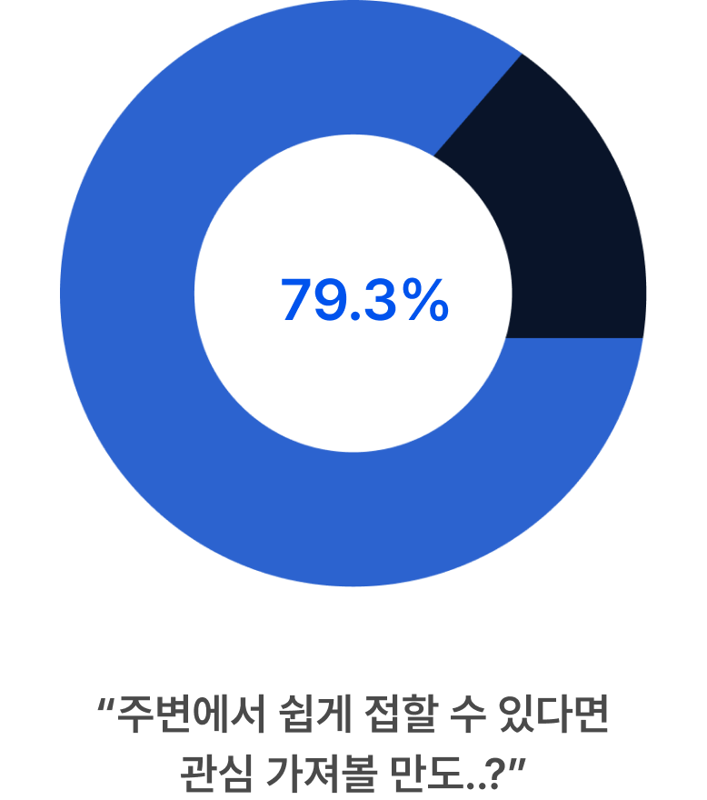
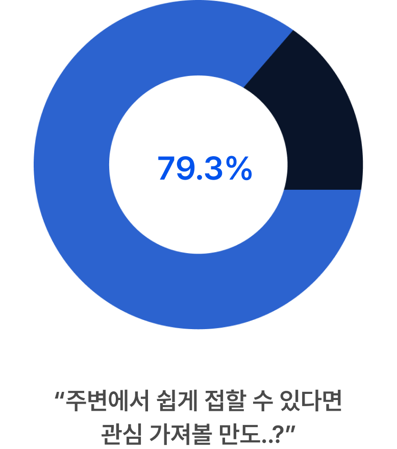

기후변화, 생태계 파괴와 자원 고갈까지. 우리가 직면한 환경 문제들은 더 이상 먼 미래의 이야기가 아닙니다.
더 나은 내일을 위해 사람들은 환경 문제에 관심을 가지고 목소리를 내기 시작했는데요.

젊은 세대부터 시작해,

이제는 모두의 관심사가 된 환경!

그런 흐름 속에서
업사이클링 시장이
성장하고 있어요.
업사이클링은 쓰레기 문제 해결을 위해 주목받는 개념으로,
버려진 물건에 새 가치를 더해 창의적으로 재탄생 시키는
것을 의미합니다.

업사이클링 제품 호감도 및 접근성 평가 결과, 업사이클링 제품의 낮은 접근성 때문에
직접적인 실천까지는 도달하지 못하고 있었어요.

 



여기 두 사용자들의 고민을 들어볼까요?


업사이클링은 쓰레기 문제 해결을 위해 주목받는 개념으로,
버려진 물건에 새 가치를 더해 창의적으로 재탄생 시키는
것을 의미합니다.